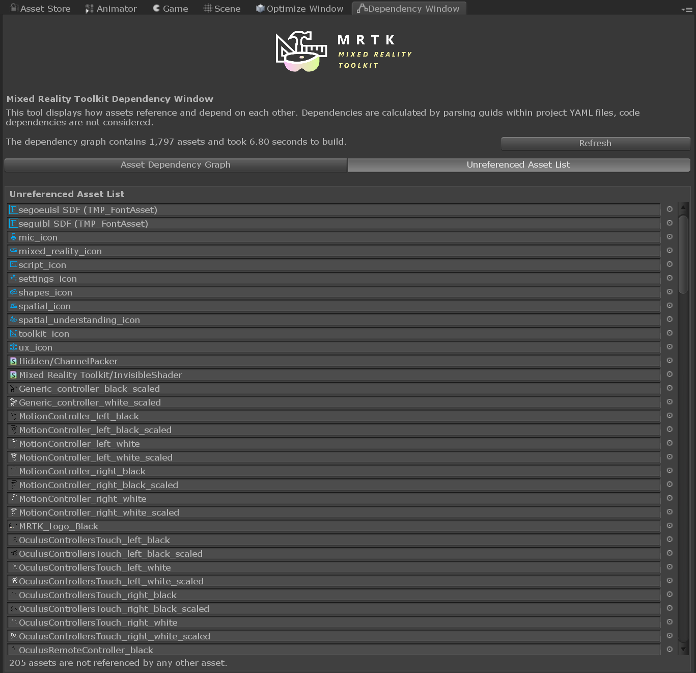

Dependency Window
Often in Unity it is difficult to gleam which assets are being used, and what is referencing them. The "Find References in Scene" option works great when you are only concerned with the current scene, but what about your entire Unity project? This is where the Dependency Window can be useful.
The Dependency Window displays how assets reference and depend on each other. Dependencies are calculated by parsing guids within project YAML files (note, script to script dependencies are not considered).
Usage
To open the window select Mixed Reality Toolkit->Utilities->Dependency Window this will open the window and automatically begin building your project's dependency graph. Once the dependency graph is built you can select assets in the project tab to inspect their dependencies.

The window displays a list of assets the currently select asset depends on, and a hierarchical list of assets that depend on it. If nothing depends on the currently selected asset you can consider deleting it from your project (note some assets are loaded programmatically via APIs like Shader.Find() and may not be caught by the dependency tracker).
The window can also display just a list of all assets which are not referenced by any other assets and could be considered for deletion:

Note
If assets are modified, added, or removed while the dependency window is in use it is advised to refresh the dependency graph for the most "up to date" results.